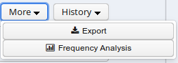
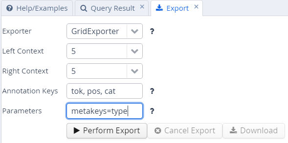

Exporting Results
To export search results, open the menu "More" between the Search and History buttons and select "Export":

Enter the query whose results you want to export as usual in the AQL box. Note that you do not need to carry out the query first. You can enter the query and export without pressing Search before. Several exporter modules can be selected from the Export tab shown below.

The SimpleTextExporter simply gives the text for all tokens in each search result, including context, in a one-row-per-hit format. The tokens covered by the match area are marked with square brackets and the results are numbered, as in the following example:
0. of the International Brotherhood of [Magicians] Wednesday , October 9 ,
1. Magic Month in the United [States] . Wikinews spoke with William
2. of the International Brotherhood of [Magicians] , about the current state
3. - " Scarne on Card [Tricks] " and " Scarne on
4. and " Scarne on Magic [Tricks] " . That started me
The TextExporter adds all annotations of each token separated by slashes (e.g. dogs/NNS/dog for a token dogs annotated with a part-of-speech NNS and a lemma dog).
The GridExporter adds all annotations available for the span of
retrieved tokens, with each annotation layer in a separate line.
Annotations are separated by spaces and the hierarchical order of
annotations is lost, though the span of tokens covered by each
annotation may optionally be given in square brackets (to turn this off
use the optional parameter numbers=false in the ‘Parameters’ box). The
user can specify annotation layers to be exported in the additional
‘Annotation Keys’ box, and annotation names should be separated by
comas, as in the image above. Metadata annotations can also be exported
by entering “metakeys=” and a list of comma separated metadata names in
the Parameters box. If nothing is specified, all available annotations
and no metadata will be exported. Multiple options are separated by a
semicolon, e.g. the Parameters metakeys=type,docname;numbers=false. An
example output with token numbers and the part of speech (pos) and
syntactic category annotations looks as follows.
0. tok of the International Brotherhood of Magicians Wednesday
pos IN[1-1] DT[2-2] NP[3-3] NP[4-4] IN[5-5] NPS[6-6] NP[7-7]
cat S[1-6] VP[1-6] NP[1-6] PP[1-6] NP[2-4] PP[5-6] NP[6-6] NP[7-12]
Meaning that the annotation cat="NP" applies to tokens 1-6 in the search result, and so on. Note that when specifying annotation layers, if the reserved name 'tok' is not specified, the tokens themselves will not be exported (annotations only).
The WekaExporter outputs the format used by the WEKA machine learning tool. Only the attributes of the search elements (#1, #2 etc. in AQL) are outputted, and are separated by commas. The order and name of the attributes is declared in the beginning of the export text, as in this example:
@relation name
@attribute #1_id string
@attribute #1_span string
@attribute #1_anno_const:cat string
@attribute #2_id string
@attribute #2_span string
@attribute #2_anno_GUM:claws5 string
@attribute #2_anno_GUM:lemma string
@attribute #2_anno_GUM:pos string
@data
'11318611','the current state','NP','11318616','current','AJ0','current','JJ'
'11318686','magic','NP','11318688','magic','AJ0','magic','JJ'
'11318757','some basic tricks','NP','11318760','basic','AJ0','basic','JJ'
The export shows the properties of an NP node dominating a token with the part-of-speech JJ. Since the token also has other attributes, such as the lemma and part of speech tags, these are also retrieved.
It is also possible to output metadata annotations per hit using the WekaExporter. To do so, use the parameter metakeys=meta1,meta2 etc. For example, if your documents have a metadata annotation called 'genre', you may export it for each search result as a further column using metakeys=genre in the parameters box.
The CSVExporter behaves much like the WekaExporter, except that the Weka header specifying the content of the columns is not used (useful for importing into spreadsheet programs such as Excel or Calc).
Note that exporting may be slow if the result set is large.